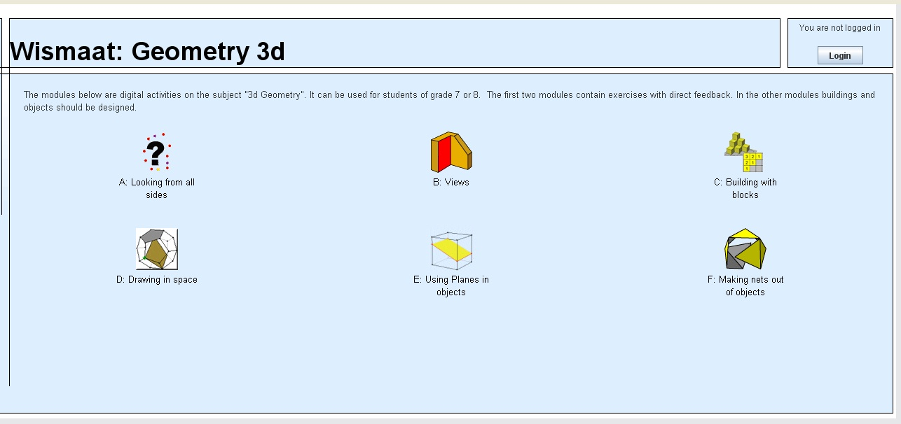

EXPERIMATES
Practica amb applets
|
Un applet és un component d’una aplicació que
s’executa en el context d’un altre programa, com ara un navegador web |
|
Vés a aquesta
adreça: http://www.fi.uu.nl/dwo/wismaat/mod3/en/frameset.html
L’Institut Freudenthal ha desenvolupat 6 aplicacions relacionades amb la geometria en 3 dimensions: 
Feu grups i aneu
tocant les diferents aplicacions. Contesteu les preguntes:
http://www.matematicasvisuales.com/html/historia/leonardo/truncatedoctahedron.html
|